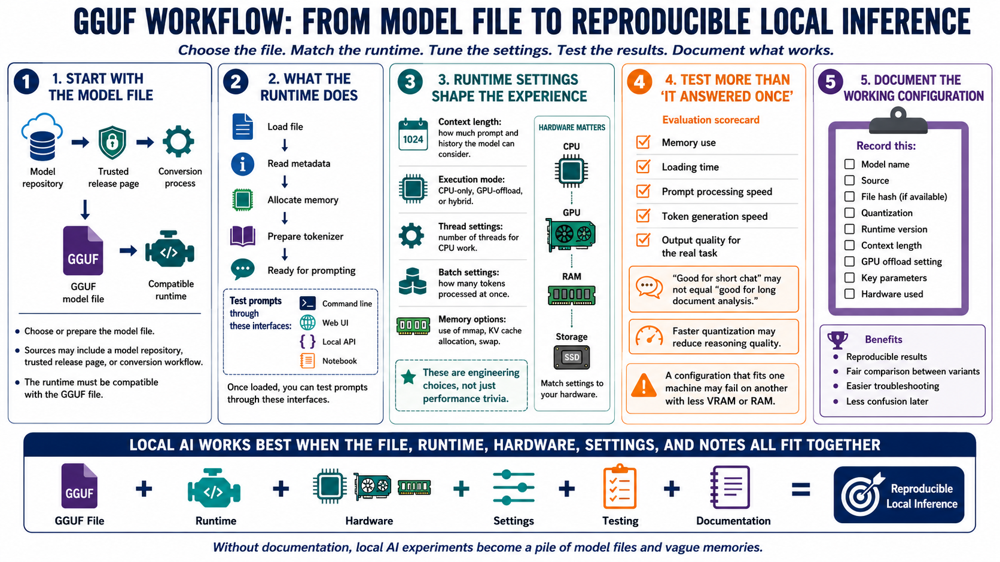

GGUF in the Local AI Workflow
Connecting to LMS... Progress: in progress

Narration
A typical GGUF workflow starts with choosing or preparing a model file, then selecting a compatible runtime. The file may come from a model repository, a trusted release page, or a conversion process. After download, the runtime loads the file, reads the metadata, allocates memory, and prepares the tokenizer. At that point, the user can test prompts through a command line, web interface, local API, or notebook.
Several runtime settings shape the experience. Context length controls how much prompt and conversation history the model can consider. Execution may be CPU-only, GPU-only for supported layers, or hybrid, where some work is offloaded to the GPU and some remains on the CPU. Thread settings, batch settings, and memory options can affect speed, responsiveness, and stability. These are engineering choices, not just performance trivia.
Testing should include more than whether the model answers once. Observe memory use, loading time, prompt processing speed, token generation speed, and output quality for the actual task. A model that works well for short chat may be poor for long document analysis. A quantization that is fast may lose too much quality for careful reasoning. A configuration that fits one machine may fail on another with less VRAM or RAM.
Documenting the working configuration is part of the workflow. Record the model name, source, file hash if available, quantization, runtime version, context length, GPU offload setting, key parameters, and hardware used. This makes results reproducible and helps compare variants fairly. Without documentation, local AI experiments quickly become a pile of model files and vague memories about what seemed to work.